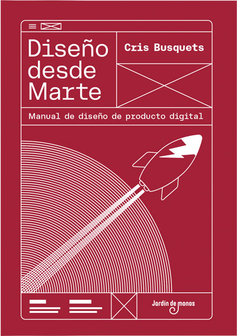
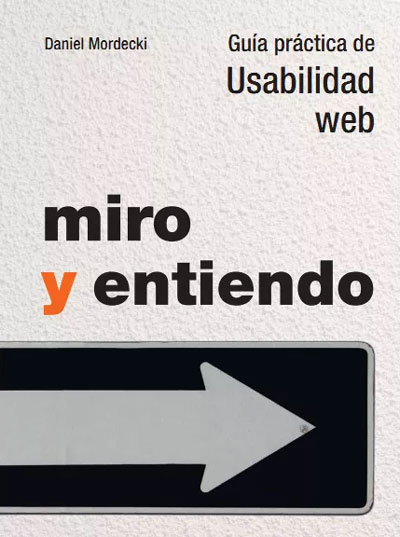
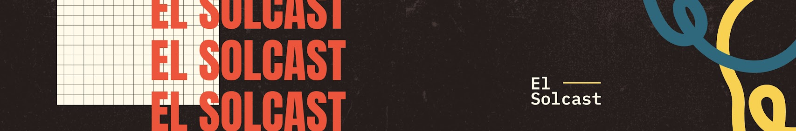
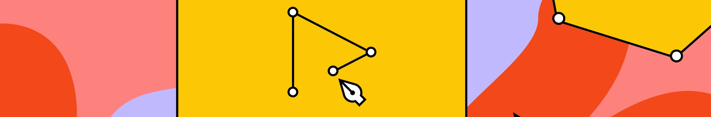

Libros
En mi trayectoria como diseñador, los libros han sido fundamentales para consolidar mis conocimientos. A continuación, comparto algunos títulos que han sido esenciales en mi aprendizaje, abordando desde principios básicos hasta enfoques avanzados.
Espero que encuentres en estas sugerencias no solo información útil, sino también la inspiración para enfrentar desafíos creativos con confianza y originalidad.
No me hagas pensar - Steve Krug
No Me Hagas Pensar" de Steve Krug se posiciona como un recurso fundamental para profesionales del diseño y desarrollo web.
En este libro, Krug aborda con precisión y claridad los principios esenciales de la usabilidad en la web. Funciona no solo como un manual, sino como una guía práctica que desmitifica la psicología del usuario y presenta estrategias efectivas para diseñar interfaces intuitivas..

Diseño desde marte - Cris Busquet
De la autora del blog uifrommars Cris Busquet, resume en este libro casi 5 años de artículos,
formando asi una herramienta fundamental para cualquiera que quiera iniciar en el mundo del
diseño UX/UI.
Desde las herramientas de investigación, metodologías de diseño, hasta formas de iniciar un
proyecto, este libro me ayudo a solidificar las bases del UX/UI y las formas de aplicarlo en el
día a día.

Miro y entiendo - Daniel Mordecki
Se presenta como una guía práctica de usabilidad web, ideal tanto para expertos en el tema como
para aquellos que se adentran por primera vez en la disciplina. Mordecki aborda de manera
didáctica y clara conceptos clave, desde la metodología de trabajo hasta la redacción web y la
usabilidad en formulario.
Canales de Youtube
Adentrarse en el vasto mundo del diseño a menudo requiere más que habilidades técnicas; demanda una fuente constante de inspiración y conocimientos actualizados.
En mi travesía como diseñador, he encontrado en los canales de YouTube aliados imprescindibles, fuentes dinámicas que han ampliado mis horizontes creativos y fortalecido mi destreza técnica.
A continuación, comparto contigo una selección de canales que considero esenciales para cualquier entusiasta del diseño.
Juanpol DI
Juan pol creo una comunidad de diseñadores los cuales se reúnen en sus videos en vivo para
compartir proyectos, experiencias y formas de trabajo, mientras da tutoriales paso a paso de
como utilizar Figma de manera fluida y como un profesional.

El Solcast
El solcast es el canal de Adrian Solcast, quien mediante sus videos en vivo, da una guía
bastante completa sobre todo lo que un diseñador de experiencias de usuarios necesita saber como
base teórica.
Desing Thinking 24/7
Con su recopilación de videos cortos sobre temas relacionados con el diseño, este canal te ayuda
a comprender conceptos básicos sobre múltiples temas, de manera didáctica y grafica.

Figma
Canal oficial de Figma, contiene tutoriales donde explican a fondo el uso de cada una de sus
funciones, también tienen videos de charlas y webinars sobre temas que ayudan a cualquier
diseñador.